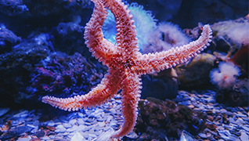

Peces
Son animales vertebrados primariamente acuáticos, generalmente ectotérmicos y con respiración por branquias. Suelen estar recubiertos por escamas, y están dotados de aletas

Estrella de mar
son una clase del filo Echinodermata de simetría pentarradial, con cuerpo aplanado formado por un disco pentagonal con cinco brazos o más.